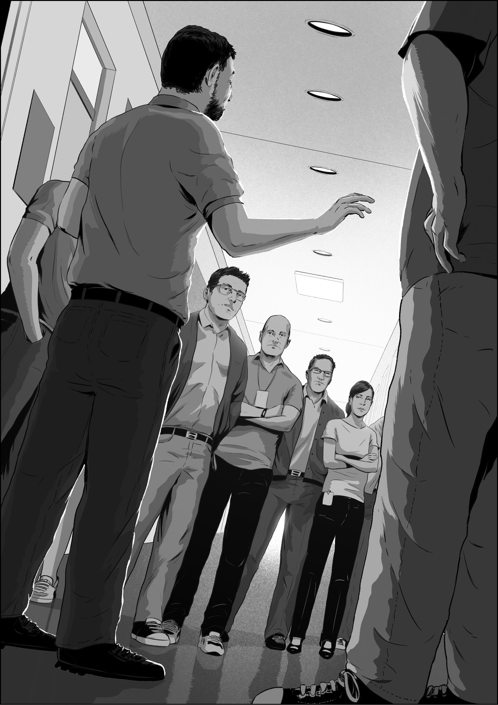
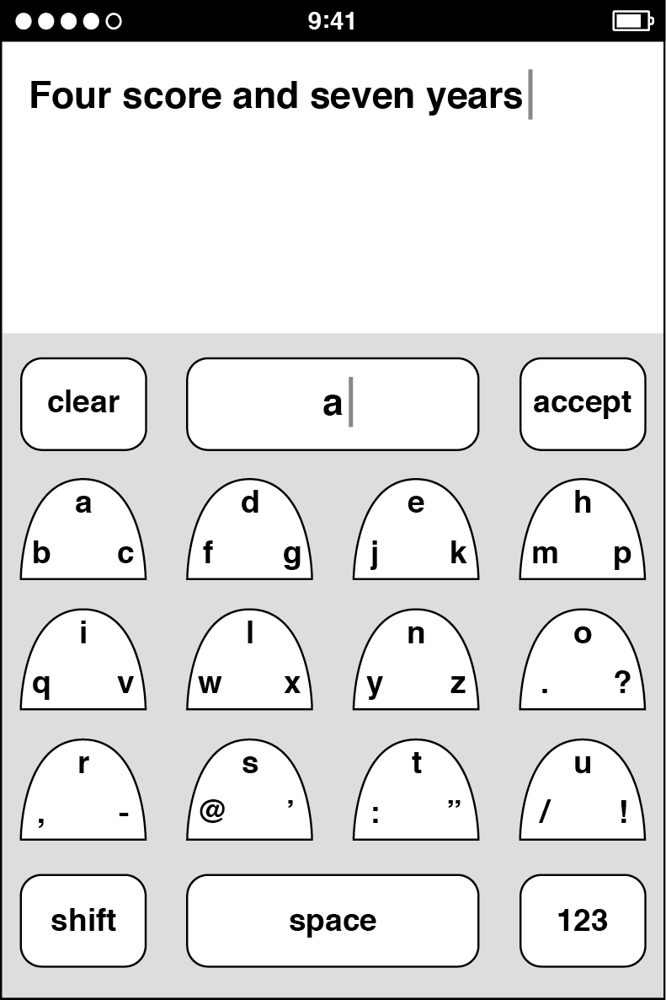
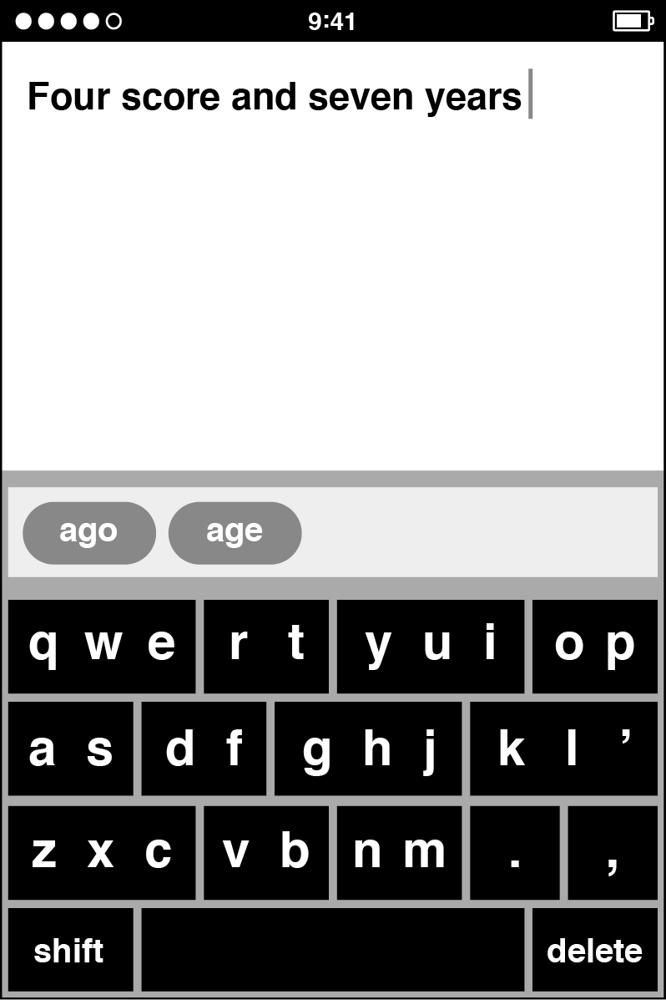
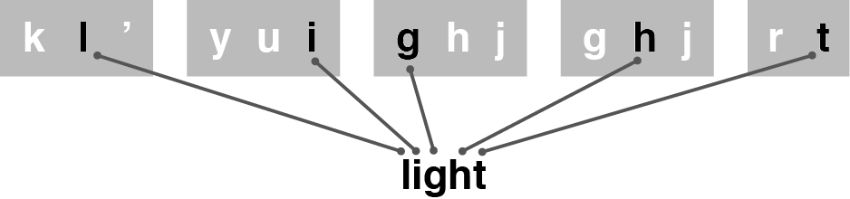
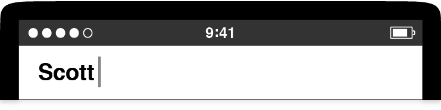
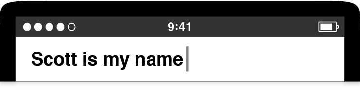
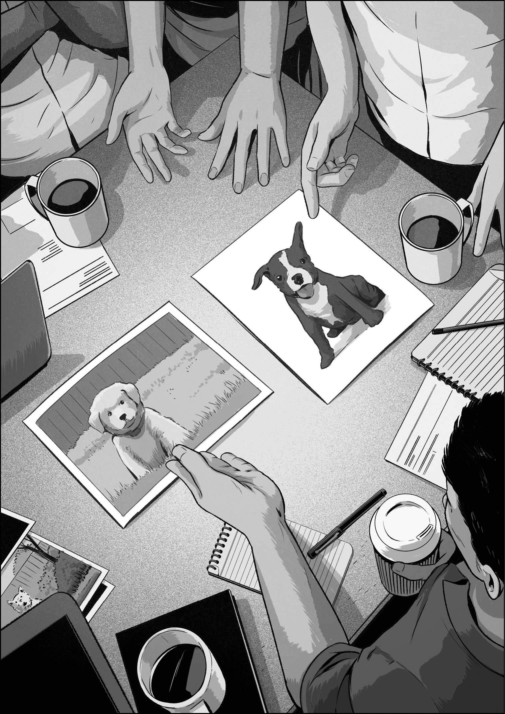

At Apple, there was never much time to savor success. Steve Jobs explained this aspect of the company ethos in an interview with NBC Nightly News anchor Brian Williams, on the occasion of the opening of the Apple Store on Fifth Avenue in Manhattan in 2006. Williams asked Steve where he “fit in the American family of thinkers and inventors.” At first, Steve attempted to brush off the question, but when Williams pressed him, Steve said: “I think if you do something and it turns out pretty good, then you should go do something else wonderful, not dwell on it for too long. Just figure out what’s next.”1
That’s what I did as my WebKit word processing project started winding down. I started to figure out what was next. I didn’t do very well, but I found Steve’s approach could work as well after a failure as he said it could after a success.
After I finished up HTML editing, I went back to meet with Scott Forstall to talk with him about my next assignment. I told him it still bothered me that I hadn’t gotten the Safari manager position two years earlier, and I asked for the chance to manage one of the other programming teams in his department.
At the time, there was an opening for manager of Sync Services, the team responsible for data synchronization between Macs and Apple’s cloud services, which were then called .Mac.* I asked for the job. Scott agreed. So did Henri Lamiraux, who was, at this time, reporting to Scott and leading the group of teams that included sync.
I liked the people on my new team, and sync was technically challenging, but very soon, I was miserable in my new job. Why? Mostly because I was unprepared for the change in my daily routine. I went from writing software every day to worrying about my team. My schedule was always full of meetings. I had to navigate cross-functional relationships with other teams related to sync, and that involved much more politicking than I was expecting or was used to. I hadn’t realized how much I relied on writing code to feel productive and happy. My programming skill suddenly didn’t matter, and I didn’t have an intuitive sense for what I needed to do to be successful as a manager. I had taken the job for the wrong reason. It was my poorly judged attempt to make up for the missed management opportunity on Safari.
I also began to see that not all Apple projects were created equal. One day I ran into the fellow who handled the marketing for some of the products in Scott’s organization, including Safari. He had always worked directly with Don on the messaging for the web browser, but I saw him in the Safari hallway often, so we stopped to chat.
“Hey, Ken. How do you like your new management job?”
“Hi, Kurt. It’s good,” I lied. Yet I thought this brief chat might have a silver lining. I made my pitch. “So, now that I’m managing Sync Services, maybe you and I can collaborate on the marketing for it.”
When Kurt heard my suggestion, his expression changed. He gave a nervous laugh and then he broke the bad news, letting me in on a fact that was obvious to him but about which I was oblivious.
“Ken, we don’t market sync. We don’t really consider it a . . . well . . . a customer-facing technology.”
Kurt seemed half embarrassed for himself and half for me. I knew immediately that “customer-facing” was Kurt’s euphemism for “important,” at least from his perspective in the marketing department.
This viewpoint counts for more than you might think. Apple is customer-focused. The company always sought to give people convincing reasons to buy its products. If the marketing department wasn’t interested in telling people about sync, then the feature was something Apple felt it needed to do, not necessarily something that it wanted to do or was excited about doing.
I didn’t know how to respond to Kurt, and I let our conversation trail off. I walked on, picked up my lunch, returned to my office, and closed the door. I stared at my schedule in the calendar program on my Mac, wondering whether I could be happy in the long term working on behind-the-scenes technology that wouldn’t be the reason why customers bought Apple products.
Around this time, I started to hear mumblings about a new super-secret project that was just getting under way somewhere in Scott’s department. I couldn’t find out for sure what it was, and the information on the grapevine was sparse, which meant it might be something big. Was it a new product? A new piece of hardware that might need some software? I didn’t know, but I was positive about one thing: I felt lost in my new job as the sync manager.
Few people suspected how unhappy I was, but my wife knew. She always encouraged me to keep an open mind about where I could work, that I was married to her, not to Apple. She suggested I might contact Google again. Over the July 4 weekend, only three months after accepting my role on sync, we decided. I would go tell Henri that I was done being a manager. I would tell him that I had made a mistake and that it would be better for everyone if I just admitted it and moved on.
When Henri and I met, I told him that I wanted out of the sync job right away. I was adamant. Looking back now, that wasn’t fair. I should have given him some sort of timeline, some period of transition, but I didn’t. Despite that, Henri remained calm. He said he was completely surprised and that he needed more information to take to Scott so they could decide what to do. It was then that I mentioned the rumor of the new super-secret project, and I suggested that if I could transfer to that, I might not quit Apple for Google.
When I said that, Henri lurched his head backward—the kind of snap response people make when they hear something they can’t quite believe. By floating this transfer idea and threatening to quit, it must have sounded to Henri like I was playing a hard angle, but I honestly wasn’t. I looked at this question like a programmer would, as a binary issue. Either I wanted to do the sync manager job wholeheartedly, or I didn’t want to do it at all.
Obviously, inevitably, I wound up in a meeting with Scott. I told him I wanted out of the sync job with the same resolve I had used with Henri, even though it was becoming increasingly clear that my approach wasn’t going over well. I said that managing the sync team wasn’t for me, and if I was going to stay at Apple, I needed to work on something else. I apologized. I offered to resign. Scott told me to slow down. From his perspective, I had gotten the management opportunity I said I wanted, and now I was asking for something else just a few months later. I had signed up for sync. “Unsigning up” just wasn’t done. Scott wanted to understand and help me, but he wasn’t convinced I knew what I wanted, and as I think back, he was right to have his doubts. He asked me to wait before I made any decisions, and with that, our meeting was over.
A couple days after that, Henri called me into his office. He closed the door. We sat down. He asked me to sign a piece of paper. It was a nondisclosure agreement, an NDA, a legal agreement that, in the typical Apple formulation, forbade me to talk about the secrets named in the document to anyone who I wasn’t sure had also signed the same NDA. I was already under a blanket NDA from the day I started at Apple, but I guessed what might happen if I signed the new one in front of me.
I didn’t hesitate.
Then Henri told me. “Yeah, we’re making a cell phone. Its code name is Purple.”
Just like that, I had joined the biggest super-secret project at the company, perhaps in Apple’s whole history. I felt a mixture of guilt and euphoria. If I’d banked points with my work on Safari and WebKit, my account was now back to zero. While my relations with Scott seemed at level almost immediately, Henri remained more skeptical, certainly at first, and the sideways glances he shot my way over the next few weeks told me that my balance with him had dipped into the red.
About two weeks after I signed the NDA, I moved onto a hallway with the rest of the new Purple software engineering team, about six or eight of us. The choice of hallway wasn’t a coincidence. We were close to Scott, and he would be the executive in charge of our smartphone development group.
We were also just one badge-access door away from the Human Interface (HI) team. They were the designers who would imbue Purple software with a spirit, from concepts and principles to animations and icons. Those of us on the programming team were responsible for supplying the sinew, by adding on the code, algorithms, and apps. Together, we had to bring our touchscreen operating system to life and give our phone a software personality.
A new door and badge reader was soon fitted to the entrance of our programming hallway too, which meant that Apple employees who weren’t disclosed on the smartphone initiative could no longer wander over to our offices on a whim, poke their heads in, and see what was happening as we got started on Purple. We now inhabited our own hallway of secrets.
I was reunited with a couple of my colleagues from the Safari project, including Richard Williamson, who became my manager. Richard reported to Henri, who also left the sync project, albeit in a less dramatic way than I did. As the Purple project got started, Scott and Henri starting plucking programmers from across the Apple software organization. All of us, including Henri and the HI team led by Greg Christie, reported to Scott, who, as always, had an inside line to Steve Jobs.
We planned to build our phone software around a technology we called multitouch, a hardware and software system that could sense and respond to taps and slides on a transparent touchscreen that could also display colorful content underneath your fingers. Experiments with multitouch had been going on inside Apple for some time, but until I joined the team it was a black project completely hidden from my view.
Now I needed to know.
During my visit to the HI studio to get my first look at multitouch, Bas Ording took me through an interactive demo he had made, as always, in Adobe Director. On his desk, he had a device we called a Wallaby, and this phone-sized experimental device was how Bas developed and tested his touchscreen demo. Prototype hardware met prototype software on the Wallaby, a multitouch display designed to give an approximation of the correct form factor of our smartphone and provide the right feel in your grip as you touched the screen. The Wallaby was tethered to a Mac through a supplementary hardware board and an umbilical cable about a quarter-inch thick. The Wallaby was only a screen. The Mac supplied the computing power, and various other connectors ran here and there. All this gear provided the hardware support to make the prototype software come alive. Bas picked up the Wallaby display, and as he tapped and swiped, he showed me the rudiments of an Apple-style touchscreen user interface system, including an intuitive, row-and-column home screen icon launcher program called SpringBoard and a fluid inertial scrolling scheme that bounced playfully when he reached the end of a list.2 Today we’re all familiar with how these things work, but on that day, I got my first look at the future of personal technology.
Impressive as it was, the software Bas showed me wasn’t a firm base for long-term development, since there was no direct engineering path from a Director demo to a shippable product. We would need a software infrastructure built on a hardcore programming language like C++ or Objective-C, and my arrival on the Purple team had come on the heels of Steve’s decision about what that foundation would be.
Richard, who had been working on Purple for a couple months longer than I, filled me in on the details. He told me that they’d considered the iPod software platform, since it already ran on handheld devices, but they questioned whether it could be expanded into a sophisticated system that could run multiple apps at once. They’d also thought about using the full-featured AppKit framework we used to develop programs for the Mac, since it provided menus, windows, and a collection of other user interface necessities, but they wondered if they could shrink it to run on the more constrained hardware platform of a smartphone. They’d thought of using WebKit, which would have meant constructing the user interface system from a set of elaborate web pages, but they were worried about ease of programmability. They’d also considered developing a brand-new touch-centric user interface system from scratch.
All these efforts had been going on in parallel, but after a couple weeks of investigation, the AppKit and WebKit options were deemed impractical and fell by the wayside.
This period had been reminiscent of the early days of the web browser project, when we had to choose a technology direction from an array of options. But Purple was different. The stakes were higher—Steve Jobs was watching obsessively. As a new hardware product with the potential to rival and cannibalize the sales of the hottest Apple product of the day, the iPod, there had been an intense competition to be at the center of what might be the next big thing. Tony Fadell, the senior vice president of iPod development, had wanted the phone software to be in his domain. Scott Forstall thought he could do better, and these two had engaged in an executive-level contest to own the future of Purple software development.
Scott won the tussle by assigning Henri and a couple of software engineers to develop a platform that borrowed as much from the Mac as possible but replaced AppKit with a brand-new multitouch-aware user interface system called UIKit. Henri’s skunk works engineering team created demos for inertial scrolling and SpringBoard—the key user interface innovations Bas had shown me on the Wallaby—as well as an early demo of Safari, all running on a product you could carry in your pocket. With these demos, Scott made a compelling case that his software team could squeeze the software essentials of the Mac onto a smartphone. Steve agreed.
Other decisions followed on from that. More programmers were brought onto the Purple project, like me. Scott soon chose my WebKit code for all editable text on our smartphone, in programs like Notes, and in Contacts, Calendar, and Mail—everywhere there was a blinking insertion point—so I got started developing touchscreen text editing. For Purple, I had to adapt my editing code to a hardware platform that didn’t have a mouse and a physical keyboard, but experimenting with touchscreen text editing felt like blazing new trails, and I was happy to do it. My first actual progress was a demo to edit the web address in the location bar in our smartphone version of Safari, and I didn’t need to wait long to show it off.
Once or twice every week, Scott led a tour of the software hallway to see the latest Purple demos. A dozen programmers, designers, and managers crammed into our one-person offices. We huddled around Scott, who held the latest Wallaby prototype hardware in front of him in the now-familiar two-hands, thumbs-free grip. He sat at the center of the presentation and acted as chief reviewer and decider. We all craned our necks to see what he was looking at, as he went through updates on apps, designs, and thoughts for making a computing system built around touch.
Even when demos went well, there was always a steady flow of feedback, suggestions for changes, impressions on how the software might behave differently. Everyone spoke up. Demos were an open forum for exchanging ideas about how an interaction might look or function better. When demos went poorly, as sometimes happened, there was the same stream of comments and constructive criticism. There was never any finger-pointing; however, there was an expectation that new demos would include a response to the feedback from previous demos. This was the one essential demo expectation: progress.
Our software leaders—Scott, Henri, Greg, and Kim Vorrath, the program manager for Purple who had primary responsibility for monitoring the development schedule—were always gauging headway. They repeatedly asked themselves the same basic questions during these periodic reviews: Does this demo close the prototype-to-product gap, even a little? Are we seeing enough positive change over last time? Is this technology or app on track?
The demos rolled on, with early versions of our app-launching animations followed by font size tests that gauged how much text we might fit on the screen while still remaining legible, followed by prototypes for apps like Contacts and Calendar. Good sessions mixed in with the not-as-good ones.
Around September 2005, there was an especially difficult demo for the onscreen software keyboard. Although the engineers who made this demo, Scott Herz and Wayne Westerman, were responsible for so much that was good in the shipping smartphone—Scott created SpringBoard from scratch and Wayne was one of the key inventors of multitouch—this latest keyboard demo wasn’t going well. I remember Scott Forstall sitting in an office chair, leaning forward, cupping the Wallaby screen in his hands as he attempted to use the keyboard demo on offer.
Try as he might, Scott repeatedly failed to thumb-type anything intelligible. The onscreen keyboard produced not just wrong words but babble. Scott kept trying, deleting backward and then typing again. Every effort ended in gobbledygook. Eventually, Scott shifted the Wallaby to his left hand and tilted it to a near forty-five-degree angle to his face. Holding it closer, he focused intently on the screen and slowly moved his right index finger toward the S key, intending to type the first letter of his name. He couldn’t. The keys were too small, and the software was hopelessly confused. No matter what he tried, Scott couldn’t type “Scott.” He called an end to the demo, put down the Wallaby, and the demo group moved on.
A day or two later, we were in for a surprise. Henri called all the Purple programmers out of our offices. By this time, there were about fifteen of us, and when we all were gathered in the hallway, Henri made an announcement. He told us to stop what we were doing, to set our current projects aside, to temporarily halt all work on Safari, Mail, SpringBoard, Notes—everything. Henri told us that Scott was pushing a big Purple pause button. He wanted everyone to start making keyboards right away. The recent “difficult” keyboard demo had raised concerns up and down the management chain. It was critical for us to have a software keyboard for our touchscreen smartphone, and the official word had now come down: Progress was too slow.
Remember back to this time. In the fall of 2005, as we were busy on Purple in complete secrecy, the BlackBerry was enjoying great success in the market. Its “CrackBerry” nickname was a nod to the addictive way people kept up on their email and messages by typing on its well-designed hardware keyboard with its little chiclet keys.3
Our Purple phone wouldn’t have a hardware keyboard. There were no prototypes in the Industrial Design studio that included anything like a BlackBerry-style keyboard. The Purple concept was built around a large touchscreen and a minimum number of fixed buttons. Apple had bet everything on a software keyboard. When it came to typing, plastic keys would give way to pixels. As a software team and as a company, we were all in. However, when it came to figuring out how to type on a flat display without tactile keys, we weren’t figuring it out fast enough.
Henri looked at his software team assembled in the hallway and said, “Starting from now, you’re all keyboard engineers.” He concluded by saying we would get together for a demo derby once we had a collection of new software prototypes to show.
As I listened to Henri, I wondered whether this was a last-ditch effort to get keyboard development back on track. What if we couldn’t? Would Purple be canceled? Henri didn’t come out and say it that way, but he didn’t have to. In all my years at Apple, we’d never before halted a fifteen-person project to focus everyone on a single problem.
While we were still standing in the hallway, I saw an image in my mind, the dashboard of a car, and this all-hands meeting caused one of the yellow warning lights to pop on. Underneath the now-lit indicator bulb, it said: Important. After the meeting broke up, I went right back to my office and, for the first time, I started thinking seriously about typing on touchscreens.
I don’t know what my Purple teammates thought or pictured in their minds, but their response was immediate as well. Our hallway started buzzing, first with ideas, then, within days, our first keyboard prototypes. Most of these early efforts were practical and were modeled on shrunk-down laptop keyboards, with many variations that moved keys to new locations to aid in usability. Some of the ideas were fanciful, like a Morse code–inspired keyboard that entered letters by combining taps and slides to mimic dots and dashes. One prototype looked like a piano—a marvelous play on the word “keyboard”—where you pressed multiple keys at once to type out words as if you were playing chords in a tune.

I made my own keyboards too, and like my colleagues, my initial tries were quick software sketches. There was none of the spell checking, word prediction, or keyboard software assistance that has become familiar. Back then, those features would have seemed like moon rockets when we were still trying to make a slingshot. Instead of even attempting any advanced concepts, I tested whether it might be easier to target individual letter keys if they were shaped like interlocking puzzle pieces. When I showed my prototypes to Richard Williamson, he wasn’t impressed.
“Your keyboards are like everybody else’s, and they don’t work. Everyone is making their keys too small, and they’re too hard to tap,” he told me. “The keys need to be bigger.”
My own fat thumbs quickly confirmed what Richard was saying. Back before touchscreen smartphones became ubiquitous, a new kind of user interaction was involved in picking up a handheld device and aiming at an array of software buttons, all closely packed together, each one smaller than a fingertip, and with nothing tactile to tell you whether you’d hit or missed your target. Now we’re accustomed to tapping away on touchscreens, but in these early prototyping days, all of us on the Purple hallway felt a twinge of apprehension when it came to tapping tiny targets on a Wallaby, because at the crucial moment, your finger covered up the thing you were trying to tap, and you couldn’t see what you were doing.
This was the problem Richard wanted us to solve. He proposed using keys much bigger than your fingertip, with three or four large keys per row rather than the dozen or more found on a shrunk-down standard computer keyboard. This was easy enough to do, but obviously, such a keyboard couldn’t include enough keys for every letter to have its own. So we started ganging up multiple letters on each key as they did on flip phone keypads and developing various means to choose the correct letter: sliding, double taps, long presses, and others.
Richard made prototypes to explore this idea. I responded with my own, which I called the Blob keyboard.4
It was easier to target keys on these big-key keyboards, but taking more screen space for the keyboard left much less room above for user content than we had been planning for in the earliest prototypes.

My “Blob” keyboard prototype. Tapping a key entered the letter at the top. Entering the letters on the bottom sides of the key required a slide to that side.
Even more important from a user interaction standpoint, everyone had trouble with the quick letter-by-letter decision to tap or swipe. Think about it: To type on a keyboard, whether an old-style manual model, or an IBM Selectric, or the keyboard on your laptop, every press on a character key enters that character. Press, press, press. In contrast, Richard-style Purple prototype keyboards with multiple letters on each key required everyone to think about every letter. With my Blob keyboard, typing a common word like “bank” required a sequence of different gestures:
Picking the correct gesture on a letter-by-letter basis created an additional mental burden that made it hard to think. When I tried Richard’s big-key keyboards and he tried mine, we often got lost in the middle of typing a word. Coupled with the redistribution of letters into unfamiliar layouts—almost all of our prototype keyboards did away with the standard QWERTY arrangement—none of them was easy to use. Would we get accustomed to these keyboards with practice? We didn’t know, but for sure, these big-key keyboards weren’t instant successes.
After a couple more weeks went by, I looked at the five complete keyboard prototypes I’d made since the hallway meeting, and I decided that none of them was any good. I scrapped them, but I wasn’t starting over from square one. I’d taken away a few lessons:

My big-key, tap-only, dictionary-assisted keyboard prototype.
I decided to make a new keyboard based on these principles, and I thought there was still more unrealized potential to reduce the mental burden. I wanted to make a keyboard that demanded less attention from people as they tapped, a keyboard that allowed people to think more about their typing and less about futzing with the touchscreen and the user interface.
Here was my concept: a big-key QWERTY keyboard that displayed multiple letters per key but that offloaded the decision of picking the letters to the computer. No more swipes or slides. Typing a three-letter word would always take three taps, a five-letter word would always take five taps, and so on.
To type the word “light,” you would tap the keys that displayed those letters:
Then the keyboard would figure out you meant “light,” since that was the most sensible word with that combination of keys and letters. To make this work, I needed a word list, a dictionary. I also needed some software to access this lexicon to make a “most sensible word” determination.

The most sensible word for this succession of keys is “light.”
The only problem was that I had no idea how to make a dictionary. At times like that, it was great to be an Apple employee. The company had an immense back catalog of projects, research, and resources. I poked around. I spelunked through dark corners of long-disused directories of software stored in Apple archives. I gathered information from various sources, and I assembled a rudimentary list of English words.
Over the next week or two, I wrote some code to take keyboard taps, perform a dictionary lookup, and update the display with suggested words. I struggled with the dictionary code, and even though Richard helped me improve the speed of my dictionary lookups with a couple clever programming ideas, I was barely ready when I got a calendar invitation. This was the call to bring our prototype keyboards to a group meeting where Scott would try them all out. If he liked one, he would declare a winner.
Our program manager, Kim Vorrath, organized this important meeting, and she circulated a plan for a demo that called for all the keyboard derby participants to build their prototypes into a common program, one that would make it easier for Scott to jump from one software prototype to the next without a custom procedure to cue up each entrant. This was a fine idea, but I had too much trouble compiling my dictionary to adapt my code to fit into Kim’s demo switcher. I decided to have a nonconforming demo that functioned properly, rather than the opposite, and when derby day came around, I was the only one who had failed to alter my demo. I would need to run my code separately from everyone else’s, and when Kim heard this, she responded by putting me last on the schedule.
That meant I might not get to show my demo at all. My opportunity would turn on Scott’s unpredictable schedule, and his availability could change in an instant. Sometimes he’d get a phone call from Steve and dash out with his phone pressed to his ear, never to return that day. Other times he was delayed, so we would have to fit a long slate of demos into a reduced time period, and when that happened, the last ones would be dropped. Sometimes discussing the merits of the most promising demos, which were scheduled first, took far longer than anticipated, and we simply ran out of time to look at everything. I was keen to show my keyboard, but everyone else felt the same about their own, and they all had complied with the official demo procedure.
When Scott arrived to see keyboards on demo day, everyone on the software team was gathered in the main Purple team conference room, which was called Between. Across the hall, there were two other rooms: A Rock and A Hard Place. It had been about a month since Henri made his hallway keyboard announcement, and everyone had made a serious effort, but it wasn’t clear we were out of our tight spot concerning keyboards.
Scott took a chair at the long wooden table in Between, a Wallaby prototype tethered to a Mac lying on the desk. Scott picked up the Wallaby, and as he started each demo on offer in the switcher app, the programmer who created the demo stepped forward to describe how it functioned. These how-to instructions could be complicated. Some involved blue-sky interaction models, like one colleague’s complex multiple-tap scheme built around a few super-big keys he could type on without looking. Others called for various orchestrations of multitouch inputs to type letters, enter punctuation, and capitalize words. Scott was game to try everything, and as always, he was upbeat and encouraging. He found something positive to say about each demo—good graphics, clever idea, interesting concept—but he was still having a difficult time. None of the keyboards offered quick and accurate typing.
As Scott tapped and swiped through demo after demo, I stood around, shuffling my feet. I checked the time. When Scott finished looking at the last keyboard in the demo switcher, he glanced over to Kim to ask what was next. I guess she forgot about my add-on demo since it wasn’t integrated with the others, so she said, “Well, that’s it.”
“No!”
I blurted it out. It came out as more of a shout than I would have liked, but a rush of adrenaline had gotten the better of me. Scott turned to look at me. With the sound of my heart beating in my ears, I explained that I had a keyboard to show, but it would take me a moment to reconfigure the Mac connected to the Wallaby prototype. Scott pushed his chair back so I could get to the computer and launch my demo, and a few seconds later, I handed the Wallaby back to him.
He asked me how my demo worked. I told him to tap the letters he wanted to type and to ignore that there were multiple letters on each key—the software would figure out what he wanted.
Scott gave a half nod, turned his attention to the Wallaby, and as I watched over his shoulder, I saw him thumb-tap the five keys to type his name: as zxc op rt rt. He typed quickly, and when he looked up, he saw his name spelled correctly. He deleted a few times and tried it once more. After tap-tap-tap-tap-tap, he again saw:

Satisfied with that, he tapped a few more times:
yui as space nm yui space nm as nm qwe
He looked up and saw the complete sentence:

Much easier done than said. Scott turned around to me and said, “This is amazing!” Everyone else was silent for a moment, then Scott’s questions started raining down.
“Why are there multiple letters on the keys?”
“How does your software know which letter I wanted?”
“How does it figure out the word I meant?”
I explained that my software checked all the combinations for all the letters he’d typed and chose the most likely word from a dictionary I created. He asked me how I put the dictionary together, how I evaluated words against each other, why I grouped the letters as I did on the big keys, and on and on. One question followed the other in rapid succession. I had spent long hours on this keyboard over the past several days and many more thinking about possible bugs and problems. I knew my software, inside and out.
After my demo, the meeting broke up, and Scott left the conference room. As usual, he didn’t mill around, but other people did, and this gave them the chance to try my keyboard. They were supportive, but they clearly didn’t think my keyboard was as “amazing” as Scott did. That’s how it often goes with early-stage prototypes.
The final verdict on the keyboard meeting came fast, within the next day or two. Henri told us that Scott had made his decision and that we could go back to the projects we had been working on before. The keyboard emergency had passed. The Purple software engineering team could now resume our regularly scheduled programming. Except for me. Henri said that Scott wanted me to be the DRI for keyboards. Scott didn’t even bother asking me if I was willing to sign up for the job.
I had just figured out what was next.
* * *
There were a few more twists and turns on this keyboard project than was typical—the hallway pause, the all-hands redirection toward a single technology investigation, the dramatic demo derby—but the overall process that led up to this meeting with Scott was standard Apple.
The Purple hallway had been a swirl of activity. We shared our best ideas with each other about how to move forward from where we were. We worked hard, and we could provide some typical Silicon Valley evidence of that—we had a corner near Scott’s office where we stacked our empty pizza boxes. Even so, it’s not enough to look at how we arrived at a promising result on a new technology after a determined push over a few weeks and explain it by saying: We collaborated.
Exactly how we collaborated mattered, and for us on the Purple project, it reduced to a basic idea: We showed demos to each other. Every major feature on the iPhone started as a demo, and for a demo to be useful to us, it had to be concrete and specific.
We needed concrete and specific demos to guide our work, since even an unsophisticated idea is hard to discuss constructively without an artifact to illustrate it. Here’s an example:
Think of a cute puppy. Picture one in your mind. Close your eyes if you need to. Make the image as detailed as you can. Take a moment. A cute puppy.
Got one? I do too, and I did well. In fact, I think my puppy is cuter than yours.
Consider the scenario. Two people have imagined two cute puppies. I assert mine is cuter. What do we do now? Do we have a cuteness argument? How can we? We have nothing to go on. Do I try to describe the puppy in my mind and attempt to sway you that my vision of a golden retriever puppy is superlatively cute—because everyone knows that golden retrievers are the cutest of all dog breeds—and therefore, my conjured mental picture is unbeatably cute. Do you try to make a sketch on a whiteboard of the puppy you’re thinking of but then apologize because you’re a lousy artist, so I’ll just have to take your word for how cute your puppy really is in your mind? Let’s say you’re my manager. What do you do now . . . pull rank?
The scenario is ridiculous. There’s no way to resolve this conflict. Without a concrete and specific example of a cute puppy, there’s no way to make progress.
Now, I can make this easier. Here are pictures of two cute puppies.
Now we can talk about the merits of these options. I can make my case for the cuteness of the golden retriever on the left. You might favor the lovable bulldog and attempt to persuade me that the dog-smiley happy face and single flopped-over ear make it cuter. I might argue back, pointing out the extraordinarily cute way the retriever’s paws are buried in the not-so-tall grass. If we weren’t satisfied with these two choices, we could search the web for countless others.
The point is that concrete and specific examples make the difference between a discussion that is difficult, perhaps impossible, to have and one that feels like child’s play.

At Apple, we built our work on this basic fact. Demos made us react, and the reactions were essential. Direct feedback on one demo provided the impetus to transform it into the next. Demos were the catalyst for creative decisions, and we found that the sooner we started making creative decisions—whether we should have big keys with easy-to-tap targets or small keys coupled with software assistance—the more time there was to refine and improve those decisions, to backtrack if needed, to forge ahead if possible. Concrete and specific demos were the handholds and footholds that helped boost us up from the bottom of the conceptual valley so we could scale the heights of worthwhile work. Making a succession of demos was the core of the process of taking an idea from the intangible to the tangible.
Making demos is hard. It involves overcoming apprehensions about committing time and effort to an idea that you aren’t sure is right. At Apple, we then had to expose that idea and demo to the scrutiny of sharp-eyed colleagues who were never afraid to level pointed criticism. The psychological hurdle only grows taller with the knowledge that most demos—almost all of them—fail in the absolute, dead-end sense of the word.
This prospect of likely failure can make it tough to sit down, focus, and make a demo at all. Getting another cup of coffee can sound better, especially if a couple colleagues are willing to go along, and then when everybody returns from the communal break, the whiteboard may beckon, and the group might veer off into a gab session.
We didn’t do this on the Purple project. We rarely had brainstorming sessions. I recall only a few times in my entire Apple career when I stood around to rough out big plans at a whiteboard. Even when it did happen, as in my story from chapter 3, when we hashed out the porting strategy for our web browser project, we chatted, sketched, and came to our decisions as quickly as we could. If brainstorms run longer than an hour or so, or if there are more than a handful of people in attendance, or if they’re a common occurrence, they can devolve into a form of sneaky procrastination. Whiteboard discussions feel like work, but often they’re not, since it’s too difficult to talk productively about ideas in the abstract. Think of a cute puppy.
The Purple team rarely worked without concrete and specific artifacts, and the story of the keyboard derby illustrates how. Although we had little collective experience with touchscreen software keyboards before Henri told us to start working on them, that lack of grounding didn’t matter to us. Starting from our hallway meeting, we picked a point over the technological horizon and, together, we set out toward it, unsure if we were headed in exactly the right direction. It was hard to orient ourselves—the touchscreen text entry landscape didn’t exist yet. Yet that’s what innovation opportunities look like. The field was wide open, so, when any of us had a new concept for a keyboard, we made a demo to communicate what we were thinking. Literally, we had to demonstrate our idea. We couldn’t get away with telling. We were required to show. We combined some inspiration, craft, taste, and decisiveness, and we shared our results. We had to work like this, because the team didn’t accept anything unless it was concrete and specific, a demo showing what we meant. Then we tried out each other’s demos, said what we liked and what we didn’t, and offered suggestions for improvements, which led to more demos and more feedback. This virtuous collaborative cycle in the Purple hallway helped me to produce a promising keyboard demo, one the company was willing to back.
My derby winner was like a Black Slab Encounter for the Purple keyboard. It set the course for the period of work that followed, and oddly enough, the keys on my keyboard did look like little alien obelisks tipped over onto their sides.
Note
* Back before there were iPhones and iPads, sync was mostly a technology for people who habitually used multiple Macs, perhaps a desktop at home and a laptop for working on the go. Also note that Sync Services updated data only between Macs. It never handled syncing music between your Mac and your iPod. That was a different technology developed by the iPod and iTunes teams.